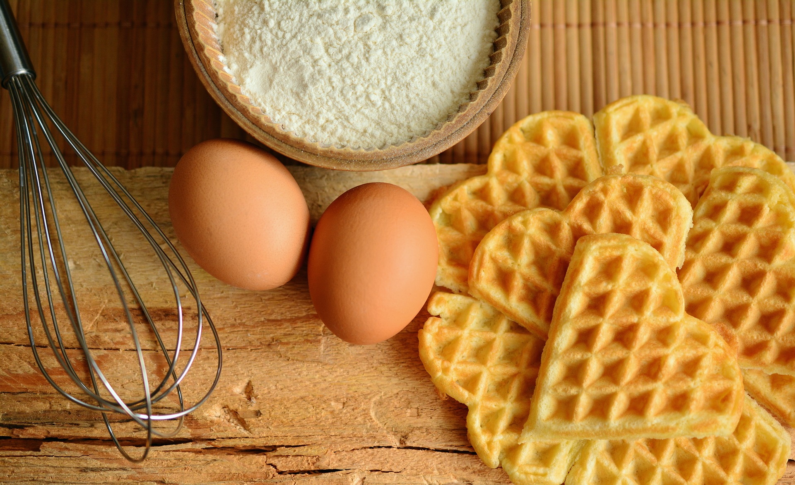

Десерты

В широком смысле слова, десерт - это сладкое блюдо, которое подают в конце еды. Поэтому к десертам относятся большинство различных сладостей. Но в узком смысле, это сладости, которые трудно точно отнести к их наиболее известным группам. Хотя все это очень условно. Почитайте рецепты десертов, посмотрите на фото десертов - ведь главное, чтобы десерт был вкусным, а уж как мы его назовем: пирожным, тортом или десертом - это уже не так важно.
Выпечка

Выпечка бывает дрожжевой, сдобной, слоеной, с начинками и без, да и по форме и размеру печеные тестяные изделия отличаются. Если взять такие блюда у всех народов мира и готовить дома по одному в день, понадобятся десятки лет.
Для выпечки необходима мука. Она может быть как белой (хлебной), так и цельнозерновой. Пшеничная, ячменная, кукурузная, гречневая, просяная, овсяная, ореховая – из всего замешивают. Обязательно ее просеивать. Это даст тесту дополнительную дозу кислорода, а дополнительная операция подарит вашему блюду еще больше любви.
Напитки

Условно напитки можно разделить на горячие напитки и холодные напитки . Рецепты напитков могут быть как очень простые, так и более сложные в приготовлении. Рецептура напитков направлена на то, чтобы получить из ингредиентов напитка желаемый вкус и максимальную пользу. Квас, морсы, компоты, лимонады, чай, кофе, кисели, безалкогольные коктейли — всё это вкусные и полезные безалкогольные напитки. Горячий напиток согреет вас зимой, холодный напиток летом подарит желанную прохладу.